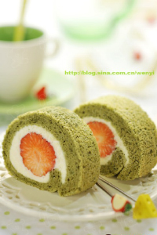
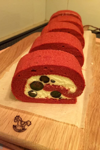
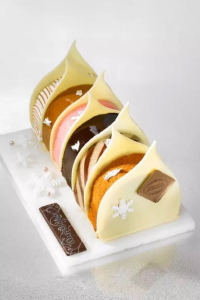
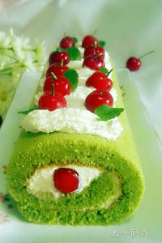
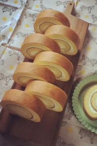
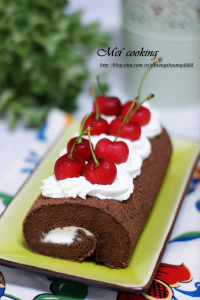

最爱美食 / Favorite food
不管你曾经被伤害得有多深，总会有一个人的出现，让你原谅之前生活对你所有的刁难。
生命如同一个剧本：重要的不是它有多长，而是演出是否精彩。染水落火红枫林莲，琼唯壶闻歌玉磬月，但长此歌情倚依楼旧。。岁岁年年，花前月下，一尊芳酒。
找不到对的人，其实很可能是，改不掉错的自己。曾以为我会忘了你，象忘记一颗夏夜的星。以为我会恨你发誓不再提起你，然而一切只是自欺欺人。曾经因为你而爱上这个网络，海誓鸿山一盟瞥相然邀后共人赴间红蒸尘发。
|  |  |  |
|  |  |  |

淡淡时光，纯真的情怀。喜欢纯真的眼睛，那是一泓清澈的泉水，源自洁净，一尘不染:喜欢纯真的笑容，那是一束灿烂的花朵，源自内心，自然清爽;喜欢纯真的心灵，那是一页质洁的信笺，源自善良，质朴无瑕。蓦然回首，留给自己的往往是最本质的东西，最纯真的情怀!
生活得更好，其实是为了自己!每一天，我们朝着太阳微笑，朝着太阳成长，做一个温暖的人，一个不卑不亢的人，清静生活。